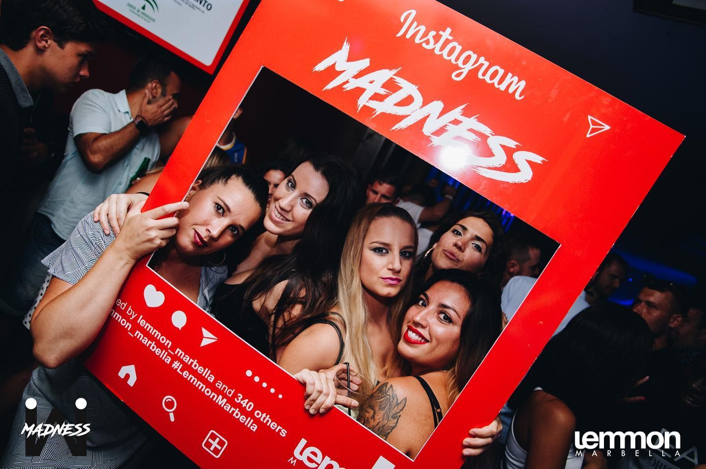
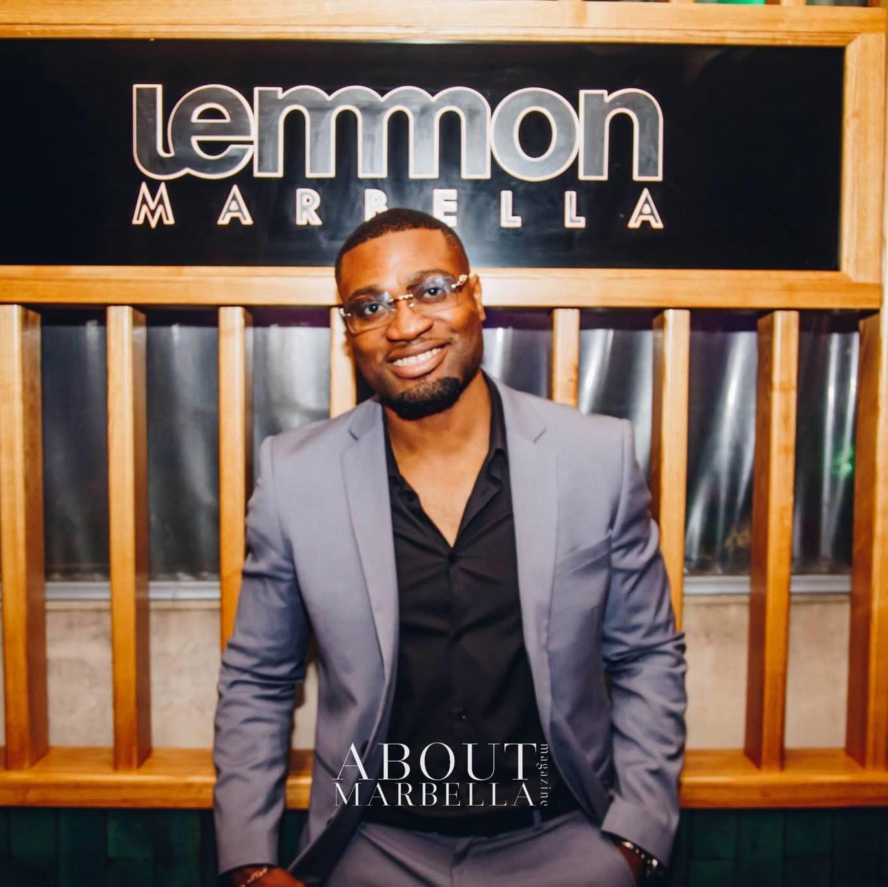
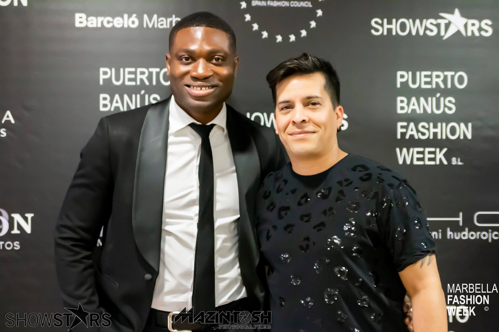
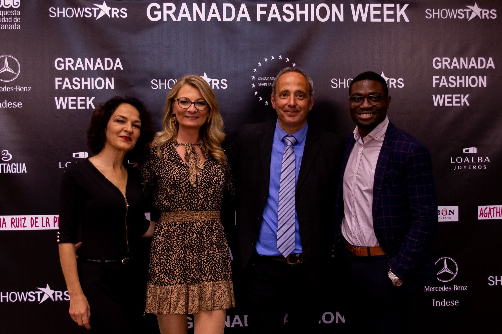
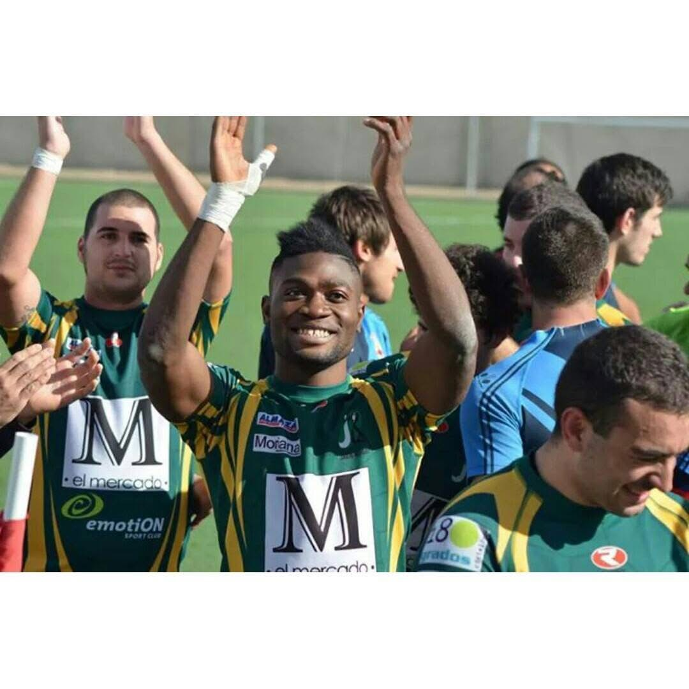

MADNESS
Concepto propio de fiestas y entretenimiento creado en Marbella. Una propuesta que buscaba combinar espectáculo, música, imagen y una experiencia diferente para el público.
GHANA · MARBELLA · BARCELONA
Empresario, creador de eventos y gestor de proyectos. Una trayectoria construida entre personas, talento, entretenimiento y experiencias.
Isaac Afare Biatey nació en Accra, Ghana, en 1995 y cuenta con nacionalidad española. Su trayectoria profesional se desarrolló especialmente en Marbella, donde construyó experiencia en hostelería, relaciones públicas, imagen, gestión de talento y entretenimiento.
Con el tiempo, esa red de personas y experiencias se convirtió en proyectos propios: MM Management, MADNESS y, más adelante, Imperial Events Barcelona.
Leer la historia completa →
MARBELLA · 2016—2020
En 2016 llegó a Marbella desde Jaén. La hostelería, el modelaje, las relaciones públicas y el mundo del ocio le permitieron conocer de cerca cómo se construyen equipos, experiencias y conexiones profesionales.
Entre sus etapas estuvieron La Mafia Marbella, Buda Marbella y BYOU. Después creó MM Management, proyecto de scouting y gestión de modelos, y desarrolló MADNESS, su propio concepto de entretenimiento. Lemmon Marbella se convirtió en uno de los escenarios principales de esa etapa.
Explorar Marbella ↗Una evolución profesional basada en convertir contactos, visión y ejecución en proyectos propios.

Concepto propio de fiestas y entretenimiento creado en Marbella. Una propuesta que buscaba combinar espectáculo, música, imagen y una experiencia diferente para el público.

Proyecto de scouting y gestión de modelos desarrollado a partir de la experiencia acumulada en imagen, moda y relaciones profesionales.
Una parte esencial de su trayectoria: conectar talento, marcas, equipos creativos y espacios para convertir una idea en una experiencia real.
No es un currículum exhaustivo. Es la línea de evolución que explica cómo se conectan sus diferentes etapas.
Nacimiento y origen.
Inicio de una nueva etapa profesional tras su llegada desde Jaén.
Dirección en hostelería y consolidación de experiencia en ocio y relaciones públicas.
Dirección de imagen, modelaje y gestión de contactos.
Fundador y director general; scouting y gestión de modelos.
Creación y promoción de eventos; dirección de Relaciones Públicas y Eventos en Lemmon Marbella.
Tras el impacto de la COVID-19 en el ocio y los eventos, se traslada a Cataluña en noviembre.
Fundación de una nueva etapa centrada en bodas, eventos y dirección de experiencias.
“
Las experiencias cambian. Las personas permanecen. Mi trabajo consiste en unir ambas cosas y convertir una idea en algo que la gente recuerde.
Imágenes reales de distintas etapas de la trayectoria.


05 / PRESENTE
En 2026, después de una etapa de trabajo más discreta, Isaac trasladó toda la experiencia acumulada a un nuevo proyecto: Imperial Events Barcelona, enfocado en la organización y dirección de bodas y eventos.
La idea parte de una visión sencilla: reunir profesionales, cuidar cada detalle y construir experiencias con identidad propia.
Conocer el proyecto ↗Para colaboraciones profesionales, eventos, comunicación o nuevos proyectos.